My Education
Education has always been a meaningful part of my journey. It’s the place where I learn, grow and discover my potential. Through every stage of my studies, I’ve gained not just academic knowledge but also life lessons that continue to shape the person I am today.
Education Timeline
- 2023 – Present: UiTM Kelantan Branch, Machang Campus (Diploma in Information Management) - After completing my SPM, I joined UiTM Kelantan, Machang Campus to further my studies. I chose this course as it aligns perfectly with my goal of pursuing a degree in Systems later on.
- 2018 – 2022: SAM Paya Jaras - This is my secondary school after primary school. My school follows a religious curriculum, so my focus has been more on religious studies than coding. I don’t plan to continue studying Arabic in the future, as I feel I won’t be able to pursue it long-term.
- 2012 – 2017: SK Puncak Alam 2 - This was the school nearest to my home where I hadn’t yet understood the essence of life. I was still a child, carefree and lost in play.
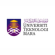
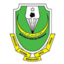
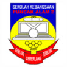
Certificates & Awards
- Dean’s List Award (Semester 1 & 4)
- Co-curriculum Achievement Certificate
- Leadership Program Certificate
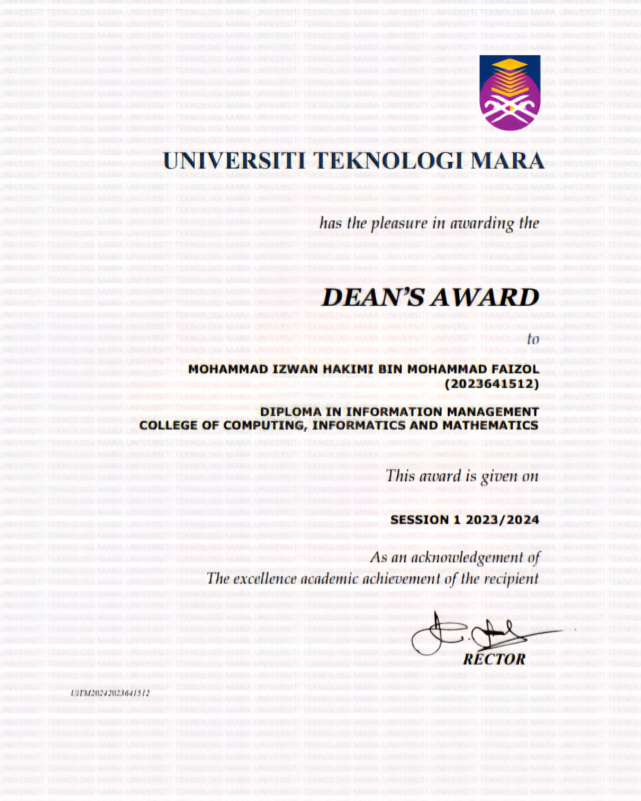
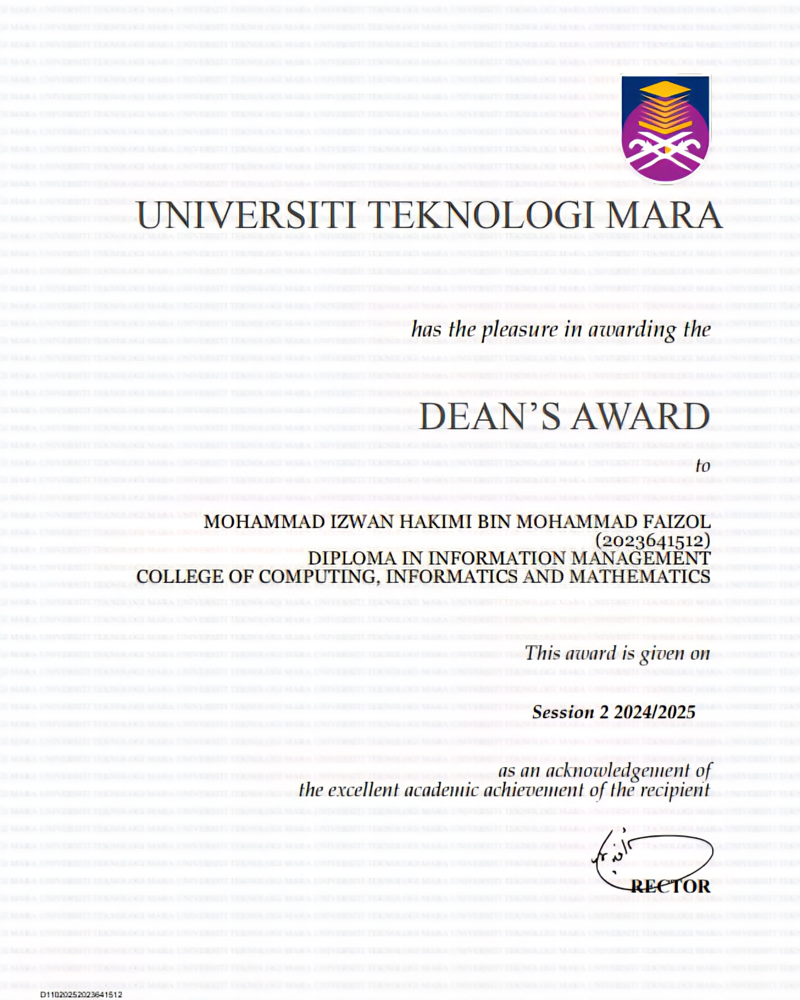
 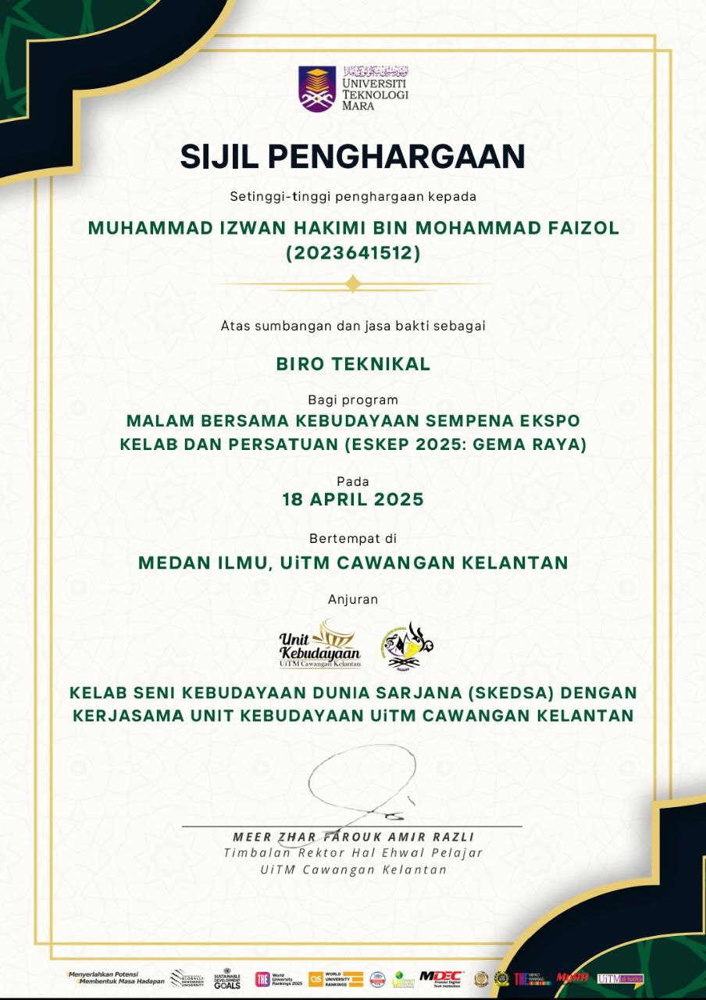
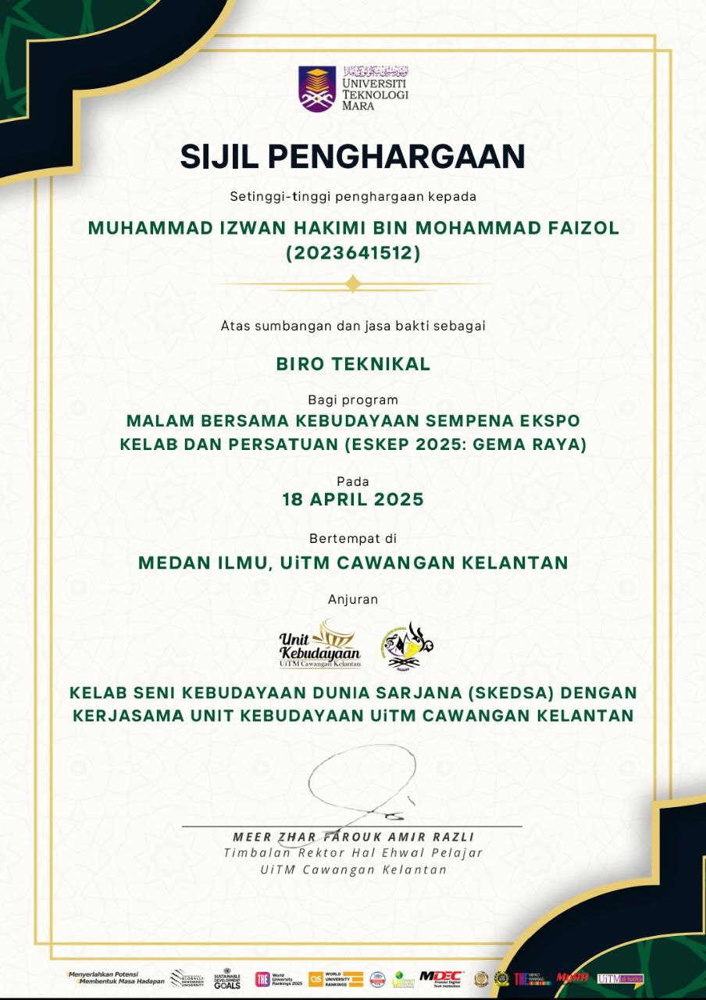
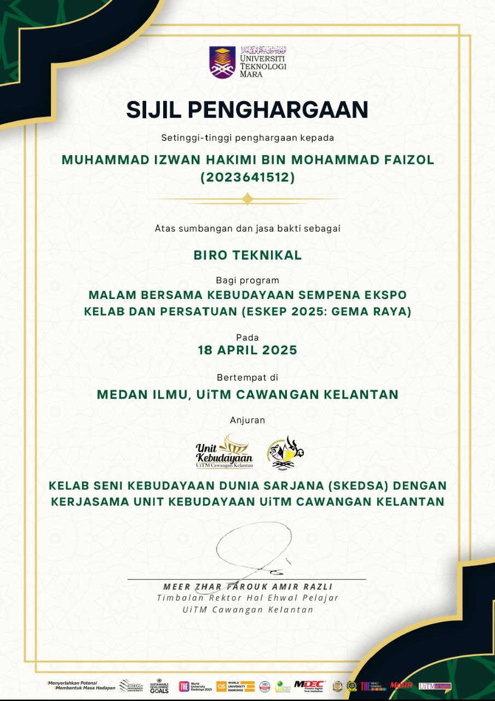
Co-Curricular Activities (Clubs / Societies)
- Majlis Perwakilan Komander Kesatria: Kompeni Sarjan Mejar Delta (2023-2025)
- Kelab Kebudayaan (CUTE): Technical Committee Member
- Crew Department: President of Department
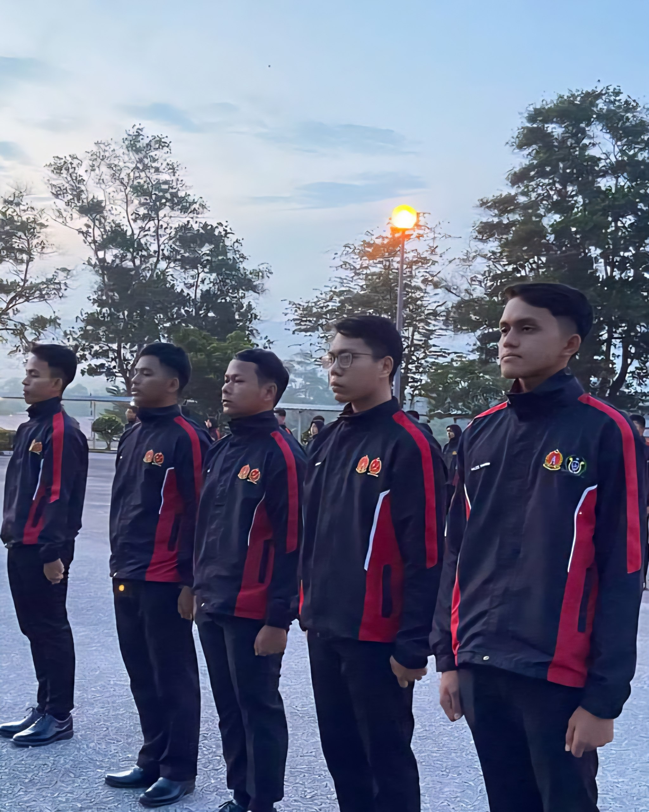
 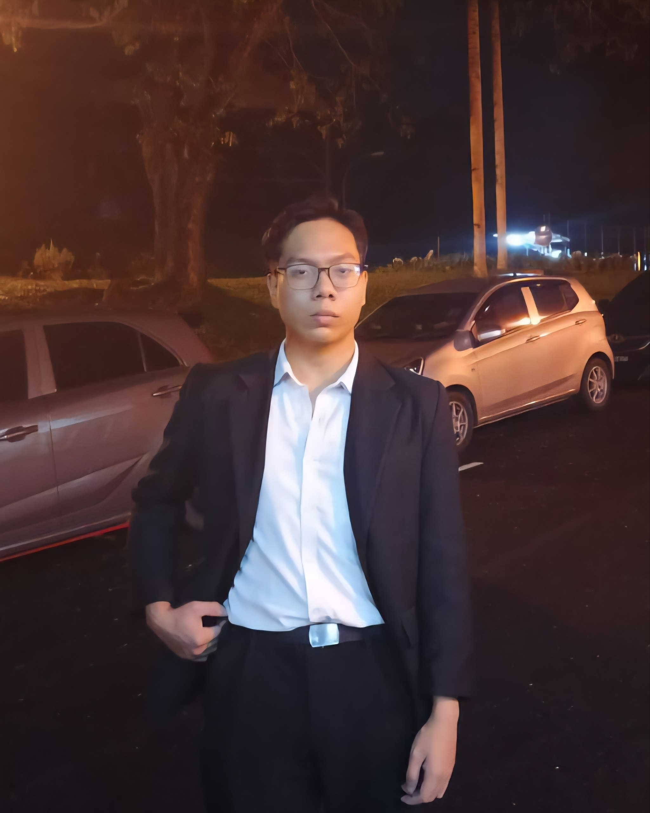
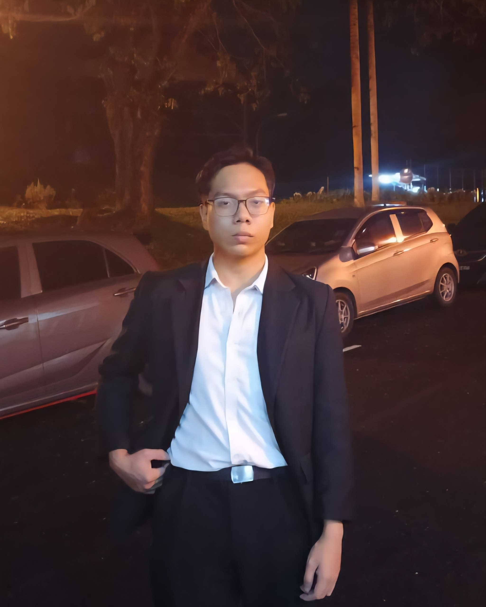
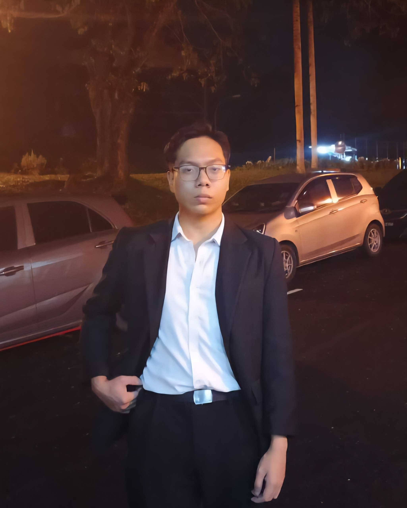
Internship
Status: completed in 19 September 2025
Field of interest: Library archive management, book arrangement, poster and infographic design, IT support and office administration.
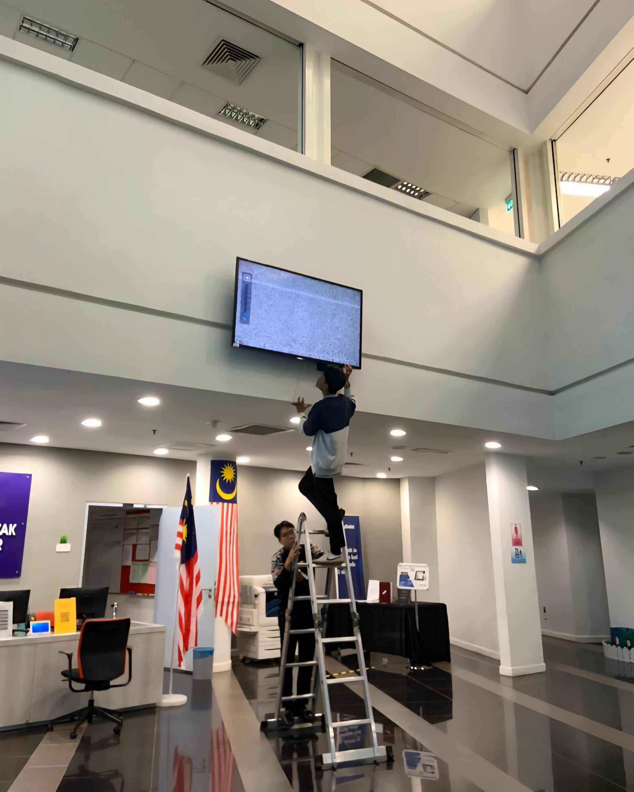
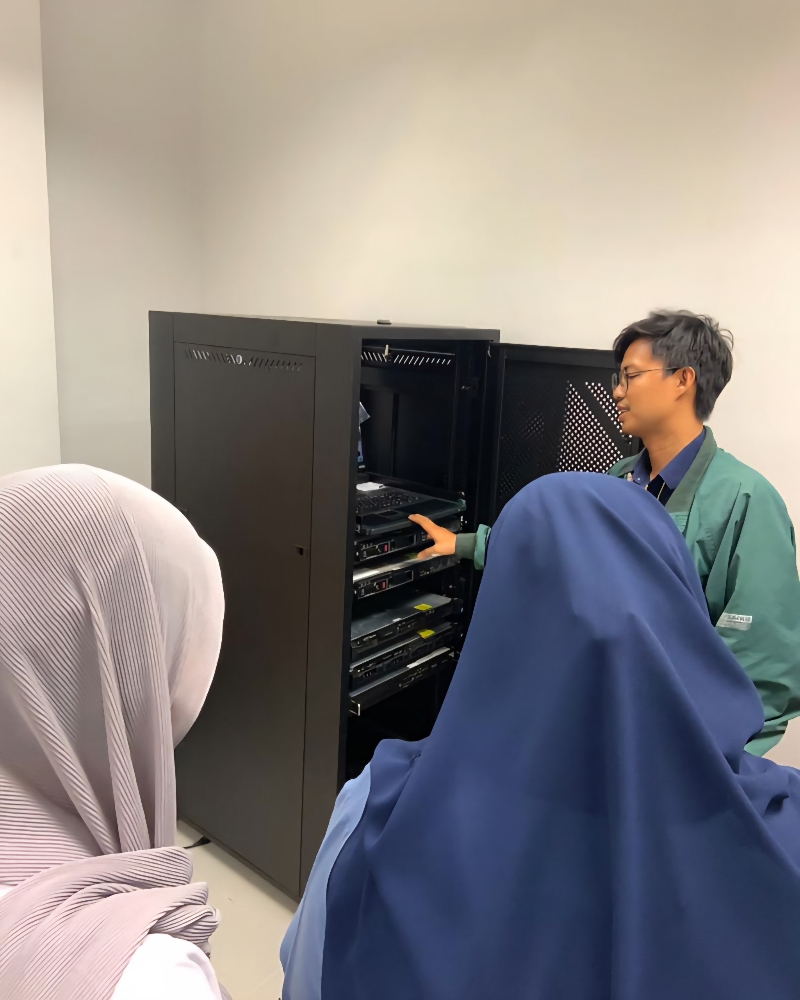
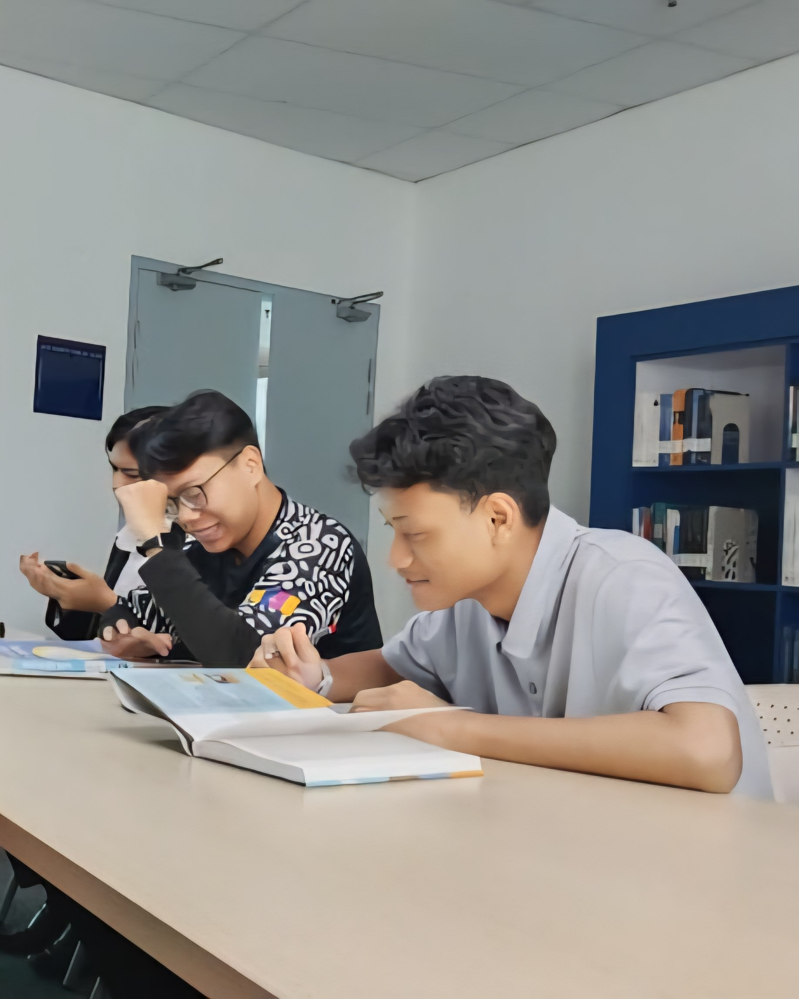
"Education is not just about getting good grades, it’s about gaining the wisdom to make a difference in the world"